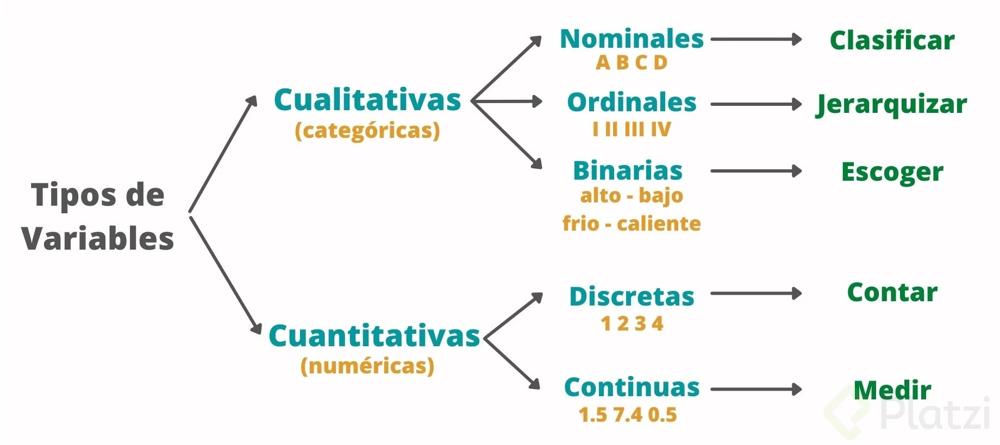

¿De qué tipo es mi variable?

dplyr
Antes de hacer una gráfica, debemos examinar el tipo de valor que toman las variables de nuestros datos.
. . .
Hay dos tipos principales de variables:
- Variables numéricas.
- Variables categóricas.
Toman valores que representan medidas numéricas o cantidades.
Altura (en centímetros).
Peso (en kilogramos).
Edad (en años).
Precio (en dolares).
Tiempo (en horas o segundos).
Puntuación en un examen (número de puntos en base de 100).
Las variables numéricas se dividen en dos tipos:
- Discretas: variables que toman valores enteros.
. . .
Por ejemplo:
- Cantidad de hijos (0, 1, 2, o 3)
- Número de estudiantes en una clase (20, 30, o 35)
- Número de libros en una biblioteca (10000, 15000, 20000)
- Continuas: variables con un número muy grande de posibles valores.
. . .
Por ejemplo:
- Altura de una persona (puede estar en el rango de 1.60 m a 1.85 m)
- Temperatura ambiente (puede estar en el rango de -30 \(^\circ\)C a 50 \(^\circ\)C)
- Tiempo que tarda un Uber en llegar (entre 5 y 60 minutos)
Toman valores que se colocan en categorías.
. . .
. . .
| Variable | Categorias |
| Reseña en Amazon | 1\(\bigstar\), 2\(\bigstar\), 3\(\bigstar\), 4\(\bigstar\), 5\(\bigstar\) |
| País de origen | México, Canadá, EUA |
| Código postal | 72703, 90034, 3000, … |
Las variables categóricas se dividen en dos tipos importantes:
- Nominales
- Ordinales
Dependiendo si las categorias tienen orden o no.
Una variable categórica es nominal si sus categorías no tienen orden.
. . .
Por ejemplo:
- Afiliación a partidos políticos (demócrata o republicano).
- Tipo de perro (pastor, sabueso, terrier, otro).
- Sistema operativo de la computadora (Windows, macOS, Linux).
Una variable categórica es ordinal si sus categorías tienen orden.
. . .
Por ejemplo:
- Talla de camiseta (pequeña, mediana, grande).
- Nivel de educación (secundaria, universidad, posgrado).
- Nivel de ingreso (menos de $250K, $250k-$500K, mas de $500K).
It is important to note that with an ordinal feature, the difference between, say, small and medium need not be the same as the difference between medium and large. Also, the differences between consecutive categories may not even be quantifiable. Think of the number of stars in a restaurant review and what one star means in comparison to two stars.
Valores enteros (por ejemplo, 1, 2, 3, …, 5) pueden representar categóricas nominales u ordinales.
| Representación | 1 | 2 | 3 | 4 |
| Tipo de Sangre | A | B | AB | O |
| Reseña | Mala | Regular | Buena | Muy Buena |
. . .
En la práctica, los valores booleanos (TRUE y FALSE) a menudo representan categorías nominales.
Variables cuantitativas (discretas o continuas) son en las cuales la suma o resta de sus valores tiene sentido.
Variables categóricas (nominales u ordinales) son en las cuales la suma o resta de sus valores no tiene sentido.
Una ves cargando los datos en R, podemos ver el tipo de variable al imprimir la tabla de datos. Por ejemplo, consideremos el conjunto de datos penguins.xlsx:
# Imprime las primeras 6 filas de los datos.
head(penguins_data)# A tibble: 6 × 8
species island bill_length_mm bill_depth_mm flipper_length_mm body_mass_g
<chr> <chr> <dbl> <dbl> <dbl> <dbl>
1 Adelie Torgersen 39.1 18.7 181 3750
2 Adelie Torgersen 39.5 17.4 186 3800
3 Adelie Torgersen 40.3 18 195 3250
4 Adelie Torgersen NA NA NA NA
5 Adelie Torgersen 36.7 19.3 193 3450
6 Adelie Torgersen 39.3 20.6 190 3650
# ℹ 2 more variables: sex <chr>, year <dbl>Las abreviaturas de letras debajo de los nombres de las columnas. Estos describen el tipo de cada variable:
dblsignifica dobles o números reales. Para variables continuas.intsignifica enteros. Para variables discretas.fctrsignifica factores, que R usa para representar variables categóricas nominales y ordinales con valores posibles fijos.lglsignifica lógico, vectores que solo contienenTRUEoFALSE. Para variables categóricas nominales.
También hay otros tres tipos especiales de variables:
dttmsignifica fechas y horas (una fecha + una hora).datesignifica fechas.chrsignifica vectores de caracteres o cadenas.
. . .
Más adelante veremos como transformar una variable chr en fctr.
Ve a la sección de Módulos en nuestra página de CANVAS.
Realiza la Actividad 2.1: Tipos de Variable individualmente.
20:00

dplyr permite manipular datos y generar resúmenes estadísticos.
Es parte de una colección de paquetes de ciencia de datos llamado tidyverse.
Cárgala en Google Colab con el siguiente código.
library(dplyr)Uno de los comandos más importantes de dplyr es pipe que se ejecuta con el operador %>%. Este operador envía un objeto a una función o expresión de llamada.
La grámatica para usar pipe es la siguiente:

dplyr es una gramática de manipulación de datos que proporciona un conjunto de verbos (funciones) para resolver los desafíos más comunes de manipulación de datos:
filter()selecciona observaciones según sus valores.select()selecciona variables según sus nombres.mutate()agrega nuevas variables que son funciones de variables existentesarrange()cambia el orden de las filas.summarise()reduce múltiples valores a un único resumen numérico.
Para esto, usaremos el conjunto de datos penguins_data.
Filtremos los datos para la especie “Gentoo.”
penguins_data %>% filter(species == "Gentoo") %>% head()# A tibble: 6 × 8
species island bill_length_mm bill_depth_mm flipper_length_mm body_mass_g
<chr> <chr> <dbl> <dbl> <dbl> <dbl>
1 Gentoo Biscoe 46.1 13.2 211 4500
2 Gentoo Biscoe 50 16.3 230 5700
3 Gentoo Biscoe 48.7 14.1 210 4450
4 Gentoo Biscoe 50 15.2 218 5700
5 Gentoo Biscoe 47.6 14.5 215 5400
6 Gentoo Biscoe 46.5 13.5 210 4550
# ℹ 2 more variables: sex <chr>, year <dbl>También podemos filtrar los datos para obtener los pingüinos con una masa corporal mayor que 5000.
penguins_data %>% filter(body_mass_g > 5000) %>% head()# A tibble: 6 × 8
species island bill_length_mm bill_depth_mm flipper_length_mm body_mass_g
<chr> <chr> <dbl> <dbl> <dbl> <dbl>
1 Gentoo Biscoe 50 16.3 230 5700
2 Gentoo Biscoe 50 15.2 218 5700
3 Gentoo Biscoe 47.6 14.5 215 5400
4 Gentoo Biscoe 46.7 15.3 219 5200
5 Gentoo Biscoe 46.8 15.4 215 5150
6 Gentoo Biscoe 49 16.1 216 5550
# ℹ 2 more variables: sex <chr>, year <dbl>Selecciona las columnas species, body_mass_g y sex.
penguins_data %>% select(species, body_mass_g, sex) %>% head()# A tibble: 6 × 3
species body_mass_g sex
<chr> <dbl> <chr>
1 Adelie 3750 male
2 Adelie 3800 female
3 Adelie 3250 female
4 Adelie NA <NA>
5 Adelie 3450 female
6 Adelie 3650 male Selecciona las columnas species, body_mass_g y sex. Después, filtra los datos para la especie “Gentoo.”
penguins_data %>%
select(species, body_mass_g, sex) %>%
filter(species == "Gentoo") %>%
head()# A tibble: 6 × 3
species body_mass_g sex
<chr> <dbl> <chr>
1 Gentoo 4500 female
2 Gentoo 5700 male
3 Gentoo 4450 female
4 Gentoo 5700 male
5 Gentoo 5400 male
6 Gentoo 4550 femaleCon mutate(), podemos agregar nuevas columnas (variables) que son funciones de las columnas en los datos. Por ejemplo, podemos calcular la división de bill_length_mm y bill_depth_mm.
penguins_data %>%
mutate("RadioLengthDepth" = bill_length_mm/bill_depth_mm) %>%
select(species, body_mass_g, sex, RadioLengthDepth) %>%
head()# A tibble: 6 × 4
species body_mass_g sex RadioLengthDepth
<chr> <dbl> <chr> <dbl>
1 Adelie 3750 male 2.09
2 Adelie 3800 female 2.27
3 Adelie 3250 female 2.24
4 Adelie NA <NA> NA
5 Adelie 3450 female 1.90
6 Adelie 3650 male 1.91Podemos ordenar los datos en función de una columna, digamos bill_length_mm.
penguins_data %>%
arrange(bill_length_mm) %>%
head()# A tibble: 6 × 8
species island bill_length_mm bill_depth_mm flipper_length_mm body_mass_g
<chr> <chr> <dbl> <dbl> <dbl> <dbl>
1 Adelie Dream 32.1 15.5 188 3050
2 Adelie Dream 33.1 16.1 178 2900
3 Adelie Torgersen 33.5 19 190 3600
4 Adelie Dream 34 17.1 185 3400
5 Adelie Torgersen 34.1 18.1 193 3475
6 Adelie Torgersen 34.4 18.4 184 3325
# ℹ 2 more variables: sex <chr>, year <dbl>Para ordenar de forma descendente usamos desc(bill_length_mm) en arrange().
penguins_data %>%
arrange(desc(bill_length_mm)) %>%
head()# A tibble: 6 × 8
species island bill_length_mm bill_depth_mm flipper_length_mm body_mass_g
<chr> <chr> <dbl> <dbl> <dbl> <dbl>
1 Gentoo Biscoe 59.6 17 230 6050
2 Chinstrap Dream 58 17.8 181 3700
3 Gentoo Biscoe 55.9 17 228 5600
4 Chinstrap Dream 55.8 19.8 207 4000
5 Gentoo Biscoe 55.1 16 230 5850
6 Gentoo Biscoe 54.3 15.7 231 5650
# ℹ 2 more variables: sex <chr>, year <dbl>Podemos calcular el promedio de las columnas bill_length_mm, bill_depth_mm, y body_mass_g.
penguins_data %>%
select(bill_length_mm, bill_depth_mm, body_mass_g) %>%
summarise(PromLength = mean(bill_length_mm, na.rm = TRUE),
PromDepth = mean(bill_depth_mm, na.rm = TRUE),
PromMass = mean(body_mass_g, na.rm = TRUE))# A tibble: 1 × 3
PromLength PromDepth PromMass
<dbl> <dbl> <dbl>
1 43.9 17.2 4202.Después de las operaciones en nuestros datos, podemos guardar el conjunto de datos resultante en otro objeto.
resumen_penguins_data = penguins_data %>%
select(bill_length_mm, bill_depth_mm, body_mass_g) %>%
summarise(PromLength = mean(bill_length_mm, na.rm = TRUE),
PromDepth = mean(bill_depth_mm, na.rm = TRUE),
PromMass = mean(body_mass_g, na.rm = TRUE))Y aplicar los verbos de dplyr al nuevo objeto.
resumen_penguins_data %>% head()# A tibble: 1 × 3
PromLength PromDepth PromMass
<dbl> <dbl> <dbl>
1 43.9 17.2 4202.dplyr es una librería que nos permite manipular datos en R.
Los tipos de variable ayudan a especificar las operaciones y visualizaciones que podemos aplicar a los datos.
Existen gráficas apropiadas o diseñadas para visualizar variables númericas o categóricas.
En este curso, veremos varias gráficas para cada tipo de variable y sus combinaciones.